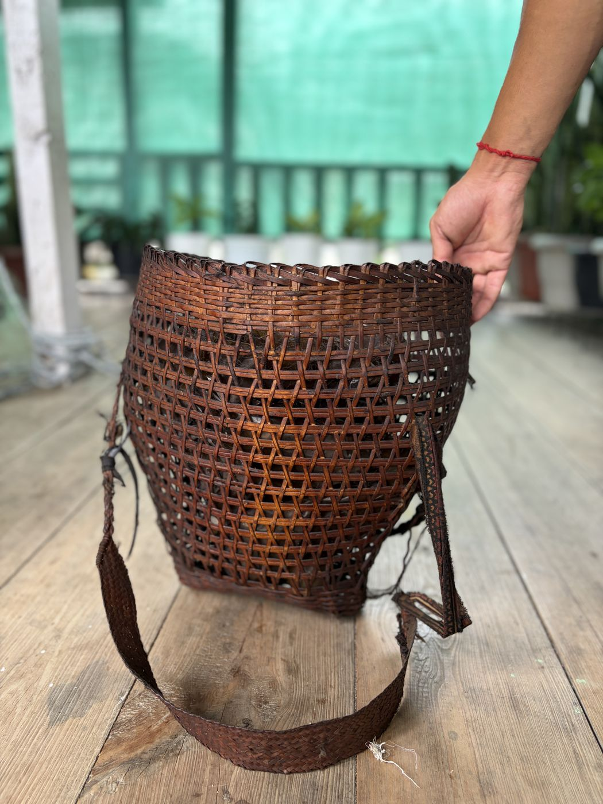
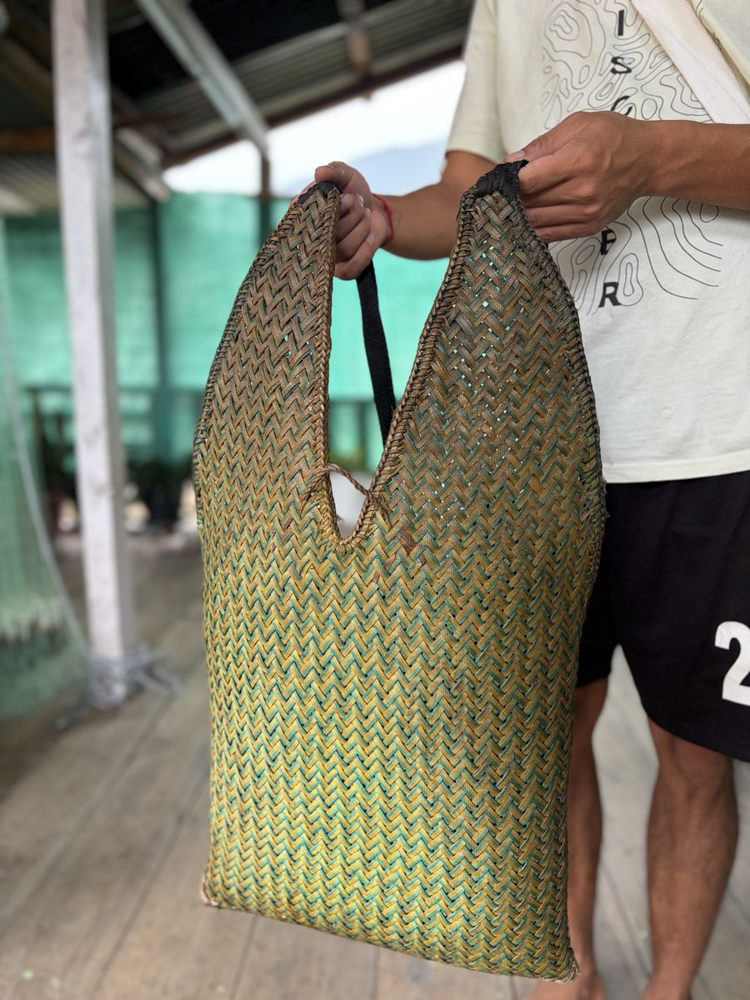

Made from bamboo.
Some of our families still work bamboo by hand. They make [what they make]. You can [watch / try / buy]. Please ask before you photograph anyone at work.

Eat what we eat.
- [Three to five dishes: the Bugun name, what is in it, when it is made, and which ones are cooked in bamboo.]
Tell us before you arrive if there is something you cannot eat. [Vegetarian food: yes / no.]